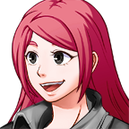
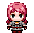

"I just HAVE to be the good guy... ...Taylors are ALWAYS the good guys." -Melissa in VS THE WORLD
Melissa Taylor is a playable character and major protagonist in the first seven chapters of VS THE WORLD. She is very outgoing, very pretty, and very popular. In the beginning few chapters, she is the driving force behind the adventure, and does brave and altruistic things because it's the right thing to do. She develops a relationship with Ethan and likes him because she can trust him and he treats her well. Zoe is her best friend.
After chapter 8 and especially in chapter 12, Melissa becomes a major antagonist after being brainwashed by
Ziza, and develops near god-like strength. Ziza calls her new form Melusa.
Biography
In VS THE WORLD
Prologue
Melissa is featured briefly in the prologue of VS THE WORLD, where she sees Ethan fight Ultrastar. She has seen a few instances of weird things going on as well (See Chapter 5), and thinks that Ethan is pretty cute, so she flirts with him a bit and gets his number.
Melissa's portrait from VS THE WORLD

Melissa's field sprite

Chapter 5
Spoiler Warning. Click button below to reveal spoilers
Melissa is the main protagonist of Chapter 5 and the driving force of the action there. She starts out by going on a few horrible dates with some guys, and while walking home from one of her dates, she overhears a plot from Morado and Avesty to take over Provo and to kill Ethan. Melissa escapes from them, and the next day meets Ethan, and tells him about what she saw. Melissa gets Ethan's number and starts to text him, flirting with him. You see her point of view being really nervous about texting him just right. Melissa ends up going on a date with Ethan that night, and they have a great date which is refreshing for both of them.
The next day, Melissa gets texts from Ethan, sensing a big shift in his tone, and offers to help him out, which Ethan refuses for some reason. Melissa and Zoe find Ethan in a restaurant with Silva, and while Silva is in the bathroom, Ethan takes Melissa behind the back and sends an ice champion to kill her. Melissa is very confused about this, and also angry at Ethan, so she sends him some angry texts and messages over Facebook. Melissa then slowly figures out that there was a girl who was murdered a few days ago that was seen with Ethan, and Melissa saw her after she was supposedly murdered, and it turns out that there was evidence that the girl was an imposter, and also connected with Ethan when he got the Ice Champion to kill her. Melissa and Zoe confronted Ethan and Silva at the museum, where Ethan revealed himself to be a shape-shifter, Avesty, and he ran off, but only before Corazon Intrepido tried to get revenge on Melissa for telling Amanda that he cheated on her.
Chapter 6
Spoiler Warning. Click button below to reveal spoilers
Melissa is a playable character in Chapter 6, where she gets a facebook message from the real Ethan that he is in Provo Caves. Melissa takes Silva to get him out so that they can go to Provo Volcano, and prevent Avesty from giving Fireboss the Volcano Crystal and destroying the world. She is the leader of the group through the volcano, not really Ethan, although she does see him as very valuable to the adventure. Melissa helps her friends to stop Fireboss and Avesty, and kisses Ethan at the top of the volcano, which she really enjoys.
Chapter 7
Spoiler Warning. Click button below to reveal spoilers
In Chapter 7, Melissa and Ethan have a montage where they slowly build their relationship and go on cute dates. However, Melissa takes Ethan to go see her parents, and they think that Ethan is not good enough for her. Melissa vehemently disagrees, and still keeps dating Ethan, although that severed their relationship, and they start to be unable to talk to one another. Melissa and her friends go to Ziza's base in Salt Lake City, only to be ambushed by Morado. Morado defeats all of Melissa's friends, and he's about to defeat Melissa, too, but Destyl comes in and gives Melissa power, and she defeats Morado, and collapses after.
Melissa is then put face-to-face with Ziza in her throne room, but she is blind and cannot see what Ziza looks like. Melissa attempts to attack her out of fury and rage, but Ziza simply dodges out of the way. She feels her ears get muffled and her senses disturbed, and loses all sensation of everything after.
Chapter 10
Spoiler Warning. Click button below to reveal spoilers
In Chapter 10, Melissa wakes up in a big bed, and finds that she's in a facility from an alliance. The leader of the alliance, Hazel, says that she was rescued from Ziza at the last second and that she is recruited to be a warrior against Ziza's army. She's then informed that Ethan, Steven, Kendra, and Silva are all dead. Melissa is heartbroken, but she is wary of these people... She doesn't quite trust them. Suddenly, Ultrastar appears and starts to attack people. Hazel explains that Ultrastar used to be a member of the alliance, but he rebelled and is now unstable and wants to kill everyone in a fit of delusion. Melissa goes to defeat Ultrastar, and she does, and Ultrastar gets away. Hazel is proud, and trains Melissa to become a great warrior.
Although to Melissa, Ethan, Kendra, Steven, and Silva are dead, Zoe is still alive, and Hazel figures a way to find her and bring her to the station. Melissa hugs her, and Zoe joins the alliance. Melissa is eventually trusted with a special mission to defeat Ziza, who Hazel says is a being who can shape-shift, just like Avesty, and that she is taking the form of Ethan. Melissa is shocked, and then invades her castle. During the invasion, she sees Dark Ethan, who kills Zoe. Melissa is heartbroken and gets enraged, and starts to really care about this fight. She fights Morado, Ajax, Avesty, Fireboss, and finally corners Dark Ethan, and then the chapter ends. However, in the fight against Ajax, Ajax flickers a bit to resemble Zoe, which makes Melissa confused about what to believe anymore...
This chapter does not follow with the other chapters, and in Chapter 12, it is revealed that Melissa is brainwashed by Ziza, and that she is acting on a fantasy, killing whoever Ziza tells her to.
Chapter 12
Spoiler Warning. Click button below to reveal spoilers
In Chapter 12, you see Chapter 10's perspective from all of the other characters. Melissa is being called Melusa, and Chapter 10 was Ziza deceiving Melissa to petrify the heroes and everyone, and to become her weapon to petrify all life. Melusa kills everyone but Ethan, Morado, Ultrastar, and Destyl, and the four team up to defeat her. She is definitely the hardest boss in the game, and is super powerful even for Ethan's super powerful allies. Melusa eventually realizes who she is, and destroys herself to save everyone else.
After the game, you see Melissa's body, dead. Some people are very angry at her, seeing all of the petrification she caused, but Ethan, Zoe, Kendra, Silva, and Steven say that she was a hero... Merely a victim of Ziza's wrath. Melissa's body is taken back to her family, who are extremely sad, and there is a funeral for her, where she is honored alongside Destyl as a true hero.
Personality
Melissa is a very outgoing person and is a very nice girl. She compliments everyone that she meets, she's very pretty, and she's very successful. She's studying to be a mechanical engineering major and she works very hard, also being on BYU's dance team. A lot of boys like Melissa, so she can pick and choose which ones to like, but the boys end up cheating on her with other girls, something that she absolutely hates. She has very high expectations from her parents and family, who is the cookie-cutter perfect family, and she feels that. Melissa has a bit of a trouble looking down on others who don't meet her standards, and being a little merciless toward them, such as Avesty, but that's her only real flaw. The exception to this is Zoe, who she loves and looks after diligently. She's kind of torn between loving everyone and thinking she's better than everyone else, and struggles with that. However, she has a good heart, she's very brave and headstrong, wants to do the right thing, and is willing to sacrifice herself to save others. She feels frustrated that she can't find a husband, especially after all of her siblings married such successful people.
Relationships
Zoe
Melissa and Zoe are best friends, which Melissa herself thinks is somewhat weird because Zoe is someone that Melissa would not normally spend time with. Melissa originally harshly judged Zoe when they were missionary companions, but eventually learned to see her point of view and started to love her and to look after her. Melissa pushes Zoe to do the best that she can, and is someone Zoe really loves.
Ethan
Melissa initially senses that Ethan is a cute and somewhat nice guy, and starts to text and flirt with them. She then finds that they are very compatible, and starts to fall for him, and he falls for her. She motivates him to be the hero in the beginning chapters and do brave things, like stop Fireboss and Avesty in Provo Volcano. However, when Ethan meets Melissa's family, he feels very out-of-place there, feeling less successful than everyone else, but Melissa still hangs on to him because she doubts she'll find another boy who treats her well, and Ethan doubts he'll find a girl as good as her. But their relationship unravels. She still really respects Ethan and he respecting her is ultimately what led to Melusa's weakness and Ziza's demise.
Trivia
Melissa is meant to be a foil to Zoe of the different side of Provo, where people are nice people and do their best, but sometimes have too high expectations of others.
Melusa is considered the hardest boss in the game.
Melissa's red hair color was inspired a bit by Cordelia, Nathan Driggs's favorite character in Fire Emblem Awakening.